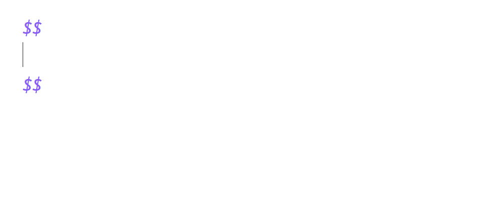
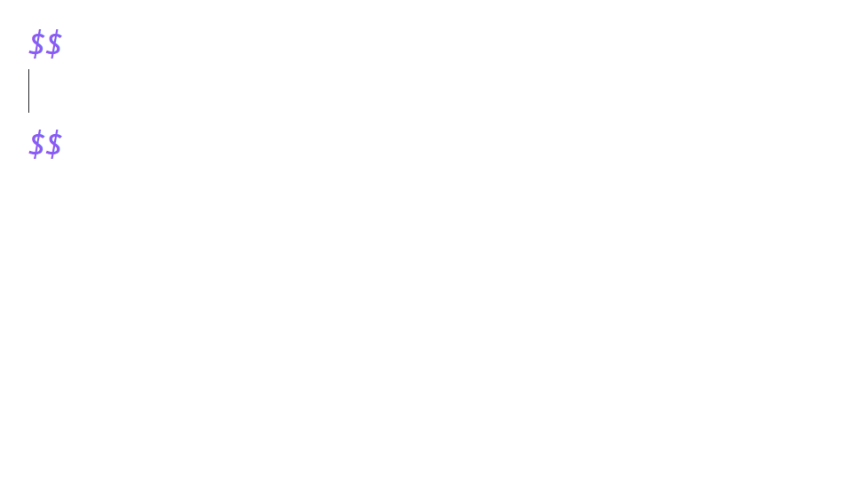
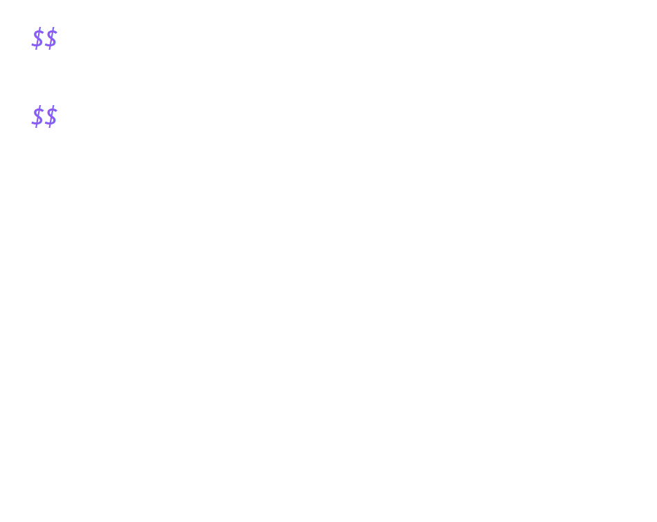
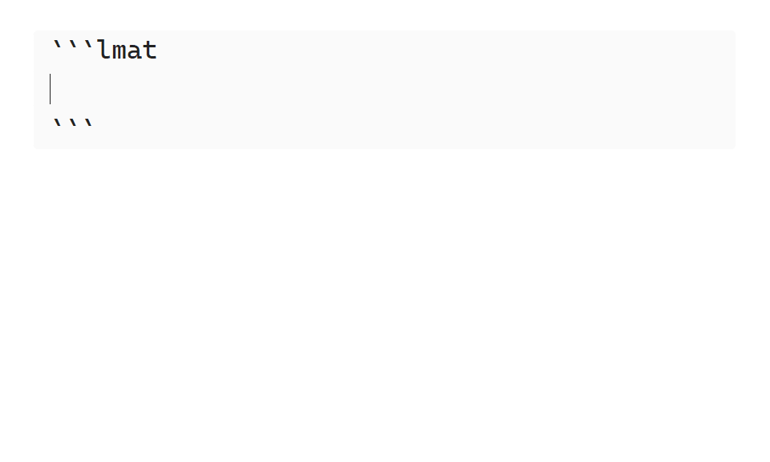

Feature Showcase
This page provides a brief overview of LaTeX Math's main features, along with simple usage examples to get you started with using them.
Evaluate Math Blocks
Use the evaluate command suite to evaluate the content of a math block in various ways.
The output format depends on the chosen command, you will in most cases use Evaluate LaTeX expression, which simplifies the result as much as possible, before inserting it.
The entire evaluate suite consists of the following commands: Evaluate LaTeX expression, Evalf LaTeX expression, Expand LaTeX expression, Factor LaTeX expression and Apart LaTeX expression.

Alt+B:
Evalaute LaTeX Expression; Alt+F:Evalf LaTeX expression; Alt+E:Expand LaTeX expression
A detailed walkthrough of the commands can be found in section ??? in the tutorial.
Solve Equation(s)
Solve equations using the Solve LaTeX expression command.
System of equations can also be solved, by placing them in an align or cases environment, separated by latex newlines(\\).

For more info on solving equations, check out the ??? tutorial or the ??? reference.
Define Symbols and Functions
Define symbol values or function bodies with the := operator.
Definitions persistence are location-based. Any math block below a definition will use it; others will ignore it. Furthermore, all definitions are reset after an lmat code block.
Only one symbol or function can be defined per math block.

\(n'th\) Fibonacci number definition.
To undefine a symbol or function, leave the right-hand side of the := operator blank.
Use Units and Physical Constants
Denote SI units and physical constants by wrapping their name in braces {..}. LaTeX Math automatically handles converting between units, but if you are not satisfied with the result, you can manually specify which units to convert to by running the Convert units in LaTeX expression command.
Units Example
60 \frac{{km}}{{h}} \cdot 180 {s}
-- Evaluatle LaTeX Expression --
60 \frac{{km}}{{h}} \cdot 180 {s} = 3 {km}
See the units and constants page, for a list of supported units and physical constants.
Enforce Symbol Assumptions
Use lmat code blocks to tell LaTeX Math about various assumptions it should make about specific symbols. This enables further simplification of expressions, such as roots, or limits the solution domain when solving equations. By default, all symbols are assumed to be complex numbers.
lmat code blocks make use of the TOML config format. To define assumptions for a symbol, assign the symbol's name to a list of assumptions LaTeX Math should make, under the symbols table. Like definitions, an lmat code block's persistence is based on its location. See below the demo GIF for a simple static lmat code block example.

Example
```lmat
[symbols]
x = [ "real", "positive" ]
y = [ "integer" ]
```
You can read more about LaTeX Math environments and the lmat code block in the docs.
See the Sympy documentation for a list of possible assumptions.
Simplify Logical Propositions
Simplify logical propositions using the evaluate commands. Truth tables can be generated from a logical proposition using the Create truth table from LaTeX expression commands.
-math-blocks
Logic Example
(A \land B) \implies (A \lor C)
-- Evaluatle LaTeX Expression --
(A \land B) \implies (A \lor C) \equiv \mathrm{T}
See SYNTAX.md/Logical Operators for a list of logical operators and constants.
Tip
Want to check if two expressions are equal?
Put an \iff in between them and upon evaluation, LaTeX Math will insert True if they are symbolically equal or otherwise False if they are not.
Convert To Sympy
Quickly convert math blocks into Sympy code with the Convert LaTeX expression to Sympy command.
This will insert a python code block containing the equivalent Sympy code of the selected math block.
Sympy Example
\begin{bmatrix} 1 & 2 \\ 3 & 4 \end{bmatrix}
-- Convert LaTeX expression to Sympy --
```python
Matrix([[1, 2], [3, 4]])
```